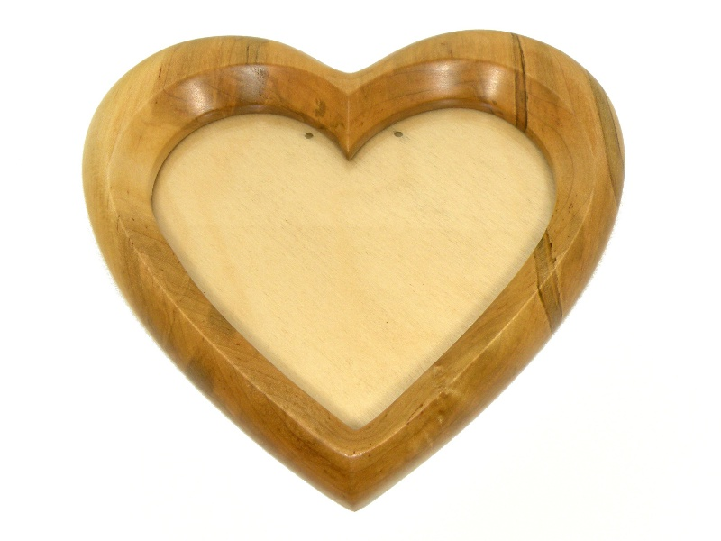
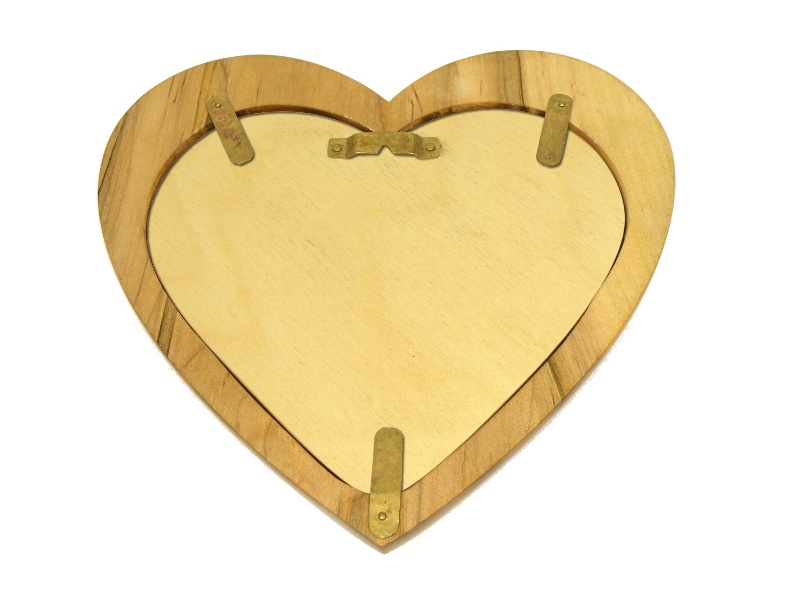

Heart-Shaped Picture Frame Heart-Shaped Picture Frame
Heart-Shaped Picture Frame Heart-Shaped Picture FrameAmbrosia maple is a wood which usually displays deeply constrasting streaks in the grain, as well as a rich variety of color. Its name, and its characteristic look, both come from a little weevil called the ambrosia beetle. The ambrosia beetle infests dead trees - maple being a favorite - where it cultivates fungal infections which spread throughout the wood and provide its sole source of food. Rather than being ruined, wood which has been colonized by these beetles is enhanced by the infestation, and prized for its distinctiveness. The frame below is carved from a solid piece of ambrosia maple.
I cut the heart out using a scroll saw, then used a router to bevel the inside and outside of the frame. Because this maple burns a bit when routed, a great deal of hand sanding was required to smooth the surface anyway. The front of the frame was sanded to 400 grit, then coated with linseed oil varnish. Stain is undesirable on ambrosia maple; the natural beauty of the wood is brought out very easily, and stain would only mask it.
The frame's window is made from clear polycarbonate. I normally prefer glass over plastic because glass is far less likely to scratch; however, in this case, I decided that the ease of cutting a piece of heart-shaped plastic would far outweigh the benefits of glass.
The backing board is a piece of 1/8" birch plywood, held in by brass tabs which swivel out of the way. The tabs were cut from the only suitable material I had available: a piece of tubing. These hand-hammered brass keepers have some spring to them and will not rust, two reasons I chose the material over the other metals I had available. The hanger was made in the same manner, then attached to the backing board with hand formed rivets.
Created by Sean Corron, April 2, 2011.